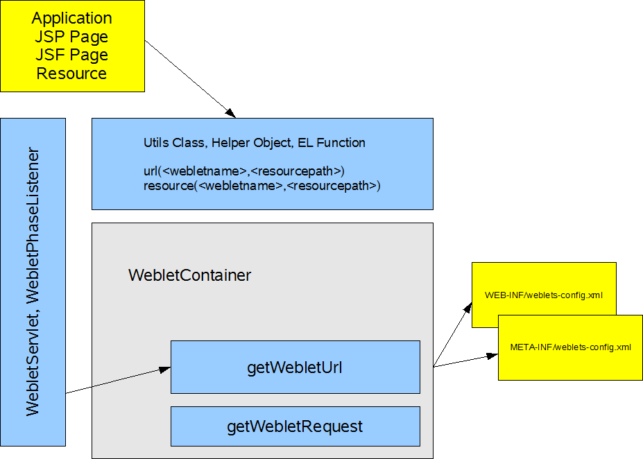

The goal of this open source project is to provide JSF component writers with a facility that can serve resource files out of a Java archive (JAR), rather than serving them from the web application root file system. Unlike traditional web applications, which have statically configured URL mappings defined in web.xml , there is a need for dynamic configuration of URL mappings, based on the presence of a component library JAR. In essence, Weblets provide developers with an easy way to package web application resources in the same Java archive (JAR) that their implementation code resides in.
Let's assume that we have a JSF component, which needs to have a JavaScript file - myScript.js , served to the client. This JavaScript file is used by the component to provide some level of richness when interacted with by the end-user. This JavaScript file is traditionally served by the web application via a relative path that is hard coded into the actual Renderer code for the JSF component. This requires the application developer to deploy additional resources that are delivered and packaged in a separate archive file e.g. ZIP, often referred to as "installables".
It is important to note that the JavaServer Faces HTML basic RenderKit does not have any images, styles or scripts, so there is no standard solution to the Faces resource packaging problem.
The following sample Renderer code illustrates the installables approach to serving a JavaScript file - /myresources/myScript.js - from the web application root file system.
Code sample 1. The encodeBegin() method in the sample Renderer.
ViewHandler handler = context.getApplication().getViewHandler();
String resourceURL = handler.getResourceURL(context,
"/myresources/myScript.js");
out.startElement("script", null);
out.writeAttribute("type", "text/javascript", null);
out.writeAttribute("src", resourceURL, null);
out.endElement("script");
Although the installables approach is convenient for the JSF component author, it does increase the installation burden on the application developer, who must remember to extract the installables archive each time the component library is upgraded to a new version. Therefore, we need a way to package our additional resources into the same JAR file containing the Renderer classes, simplifying deployment for application developers using our component library.
The open source Weblets project aims to solve the resource-packaging problem in a generic and extensible way, so that it can be leveraged by all JavaServer Faces component writers, while placing only a minimal installation burden on the application developer.
A weblet acts as a mediator that intercepts requests from the client and uses short web URLs to serves resources from a JAR file. Unlike the Servlet or Filter approach, a Weblet can be registered and configured inside a JAR, so the component library Renderer classes, their resource files, and the Weblet configuration file (weblets-config.xml ) can all be packaged together in the same JAR. The Weblet Container can be registered just once in the web application configuration file - web.xml - for all component libraries. There is no need to separately deploy additional installables when the component libraries are upgraded to new versions.
Although Weblets were designed to be used by any web client, the Weblets implementation has been integrated with JavaServer Faces using a custom Utils Class JSFWebletsUtils , as shown in figure 1. During rendering of the main JavaServer Faces page, the JSFWebletsUtils is responsible for converting weblet specific resource URLs into the actual URLs used by the browser to request weblet-managed resources.
Figure 1. High-overview of Weblet architecture " />After receiving the rendered markup for the main page, the browser downloads each additional resource using a separate request. Each request for a weblet-managed resource is intercepted by the WebletsPhaseListener , which then asks the WebletContainer to stream the weblet-managed resource file out of the component library JAR.
The WebletContainer is designed to leverage the browser cache where possible. This improves overall rendering performance by minimizing the total number of requests made for weblet-managed resource files.
To ensure flexibility, optimization, and avoid collisions with existing web application resources, Weblets can be configured by application developers to override any default settings provided by the component author.
Weblets are configured using a weblets-config.xml file, which must be stored in the /META-INF directory of the component library JAR. Configuring a Weblet is similar to configuring a Servlet or a Filter . Each Weblet entry in the weblets-config.xml file has a Weblet name, implementation class and initialization parameters. The weblet mapping associates a particular URL pattern with a specific Weblet name e.g. org.myapp.html . The Weblet name and default URL pattern define the public API for the weblet-managed resources and should not be modified between releases of your component library, in order to maintain backwards compatibility.
Our component library packages resources in the org.myapp.faces.renderer.html.resources Java package and makes them available to the browser using the default URL mapping of /myresources/* .
Code Sample 2. Weblets configuration file, weblets-config.xml.
<?xml version="1.0" encoding="UTF-8" ?>
<weblets-config xmlns="http://weblets.dev.java.net/config" >
<weblet>
<weblet-name>org.myapp.html</weblet-name>
<weblet-class>
net.java.dev.weblets.packaged.PackagedWeblet
</weblet-class>
<init-param>
<param-name>package</param-name>
<param-value>
org.myapp.faces.renderer.html.resources
</param-value>
</init-param>
</weblet>
<weblet-mapping>
<weblet-name>org.myapp.html</weblet-name>
<url-pattern>/myresources/*</url-pattern>
</weblet-mapping>
</weblets-config>
The PackagedWeblet is a built-in Weblet implementation that can read from a particular Java package using the ClassLoader and stream the result back to the browser. The package initialization parameter tells the PackagedWeblet which Java package to use as a root when resolving weblet-managed resource requests.
Weblets also has built-in support for versioning of the component library. This is used to allow the browser to cache packaged resources such as myScript.js when possible, preventing unnecessary roundtrips to the web server.
Each time the browser renders a page, it will ensure that all resources used by that page are available. During the initial rendering of the page, the browser populates its cache with the contents of each resource URL by downloading a fresh copy from the web server. As it does so, the browser records the Last-Modified and Expires timestamps from the response headers. The cached content is said to have expired if the current time is later than the expiration timestamp, or if no expiration timestamp information exists.
On the next render of the same page, the browser checks to see if the locally cached resource has expired. The locally cached copy is reused if it has not expired. Otherwise, a new request is made to the web server, including the last modified information in the If-Modified-Since request header. The web server responds by either indicating that the browser cache is still up-to-date, or by streaming the new resource contents back to the browser with updated Last-Modified and Expires timestamps in the response headers.
Weblets use versioning to leverage the browser cache behavior so that packaged resources can be downloaded and cached as efficiently as possible. The browser only needs to check for new updates when the cache has been emptied or when the component library has been upgraded at the web server.
The following code sample illustrates the Weblets versioning feature by adding a 1.0 version to our org.myapp.html Weblet.
Code Sample 3. Weblets configuration file using 1.0 versioning for production.
<?xml version="1.0" encoding="UTF-8" ?>
<weblets-config xmlns="http://weblets.dev.java.net/config" >
<weblet>
<weblet-name>org.myapp.html</weblet-name>
<weblet-class>net.java.dev.weblets.packaged.PackagedWeblet</weblet-class>
<weblet-version>1.0</weblet-version>
<init-param>
<param-name>package</param-name>
<param-value>org.myapp.faces.renderer.html.resources</param-value>
</init-param>
</weblet>
<weblet-mapping>
<weblet-name>org.myapp.html</weblet-name>
<url-pattern>/myapp/*</url-pattern>
</weblet-mapping>
</weblets-config>
By specifying a weblet version, you indicate that the packaged resource is not going to change until the version number changes. Therefore, the version number is included as part of the resource URL determined at runtime by the Weblets Phase Listener e.g. /myresources$1.0/myScript.js . When the WebletContainer services this request, it extracts the version number from the URL and determines that the resource should be cached, and never expire. As soon as a new version of the component library is deployed to the web application, the resource URL created at runtime by the JSFWebletsUtils changes e.g. /myresources$2.0/myScript.js , thus the browser's cached copy of myScript.js for version 1.0 is no longer valid because the URL is different.
During development, the contents of packaged resources can change frequently, so it is important for the browser to keep checking back with the web server to detect the latest resource URL contents. This check happens by default every time the main Web page is rendered if the Weblet version is omitted from weblets-config.xml .
Alternatively the Weblet configuration allows component authors to append -SNAPSHOT to the version number. For example, 1.0-SNAPSHOT , as shown in code sample 4, to indicate that this file is under development and should behave as though the version number has been omitted.
Code Sample 4. Weblets configurations file using SNAPSHOT versioning for development.
<?xml version="1.0" encoding="UTF-8" ?>
<weblets-config xmlns="http://weblets.dev.java.net/config" >
<weblet>
<weblet-name>org.myapp.html</weblet-name>
<weblet-class>net.java.dev.weblets.packaged.PackagedWeblet</weblet-class>
<weblet-version>1.0-SNAPSHOT</weblet-version>
...
</weblet>
...
</weblets-config>
When serving packaged resources from a JAR, extra care must be taken not to make Java Class files or other sensitive information accessible by URL. In desktop Java applications, resource files are often stored in a sub-package called "resources" underneath the Java implementation classes that use the resource files. The same strategy is also appropriate for packaged resources in JavaServer Faces component libraries, and has the security benefit of ensuring that only the resource files are accessible by URL. All other contents of the JAR file, including Java implementation classes, are not URL accessible because no Java classes exist in either the "resources" package, or in any sub-package of "resources."
Having covered how to configure Weblets, it is time to look at how we can reference resources defined by the Weblet in our client (renderer, servlet, page, etc...). The syntax, defined by the Weblet contract, for returning a proper URL to the JSF page is as follows:
weblet:url(<weblet name>, /<resource>)
or
weblet:resource(<weblet name>, /<resource>)
The main difference between these two contract methods is, that url serves up a full url including the current web application context, while resource only serves up the relative path to the resource.
This contract is applied in various client technologies differently, but the basic structure is kept the same.
Following code samples will explain how to utilize the weblet contract apis in various frameworks and frontend technologies:
Code sample 5. Using Weblet "apis" to serve up resources
JSF:
JSFWebletsUtils.getInstance().getUrl(applicationContext, "org.myapp.html","/myresource.js")
JSFWebletsUtils.getInstance().getResource(applicationContext, "org.myapp.html","/myresource.js")
Generic non JSF webframeworks:
WebletsUtils.getInstance().getUrl("org.myapp.html","/myresource.js")
WebletsUtils.getInstance().getResource("org.myapp.html","/myresource.js")
Frontend: JSF dummy maps utilizing EL:
#{jsfwebleturl['org.myapp.html']['/myresource.js']}
#{jsfwebletres['org.myapp.html']['/myresource.js']}
EL functions usable from JSP2, facelets and JSF 1.2:
xmlns:wbl="http://weblets.dev.java.net/tags_jsp2"
${wbl:resource('org.myapp.html','/myresource.js')}
${wbl:url('org.myapp.html','/myresource.js')}
JSP Bean for JSP 1.x:
jsp:useBean class="net.java.dev.weblets.WebletsUtils" scope="application" id="jspweblet"
jspweblet.getResource( "org.myapp.html","/myresource.js")
jspweblet.getUrl( "org.myapp.html","/myresource.js")
MIME text/ resources and CSS loaded from weblet:
weblet:url( org.myapp.html , //myresource.js )
weblet:resource( org.myapp.html , //myresource.js )
(example: alert('weblet:url( weblets.demo , /welcome.js )'); )
Code sample 6. Using the API Utils classes and contractual methods to serve up resources.
String resourceURL =
JSFWebletsUtils.getInstance().url(context,
"org.myapp.html","/myScript.js");
out.startElement("script", null);
out.writeAttribute("type", "text/javascript", null);
out.writeAttribute("src", resourceURL, null);
out.endElement("script");
Basically every web framework and frontend technology can be used, by utilization of either the frontend helper methods or the backend utils APIs.
The Weblet contract apis are easy to understand. The apis start with url or resource followed by the Weblet name e.g. org.myapp.html and finally the path info, or resource file, e.g. /myScript.js . Notice that neither the URL mapping nor the version number are included in the weblet api calls. The URL mapping and version number are generated internally by the Utils Classes to create a resource URL that the weblet class and the Weblet Phase listener will service.
(Note for users of Weblets 0.4, the weblets protocol has been ommitted in favor of the weblet contract, the protocol is not supported anymore!!)
The main difference between the url and resource api is, that url serves up a full url including the current web application context, while resource only serves up the relative path to the resource.
Following example will show the difference between url and resource
Code sample 6. Difference between url and resource
JSFWebletsUtils.getInstance().getUrl(applicationContext, "org.myapp.html","/myresource.js")
resolves to /my-webapp/faces/weblets/myapp/myresource.js
JSFWebletsUtils.getInstance().getResource(applicationContext, "org.myapp.html","/myresource.js")
resolves to /faces/weblets/myapp/myresource.js
Weblets tries to support as many frameworks as possible. To enable this, generic web applications have to setup a weblets servlet in the web.xml file and have to set up a path pattern on this servlet. If no path pattern is set, weblets will issue a startup warning and will not work properly.
In order to simplify the setup for the application developer, component writers should select a default URL mapping for their component libraries. There is no need for the application developer to add any Weblet-specific configuration to the web.xml file, since the WebletsPhaseListener will be invoked automatically to service incoming requests for Weblet-managed resources. The only minor limitation due to the design of jsf is that, a path pattern as trigger for a faces servlet has to be provided, otherwise weblets will fail and issue a startup warning!
If it is not possible to set this pattern or a custom faces servlet is provided, there always is the option to use the standard weblets servlet instead!
As a new open source project, Weblets has tremendous potential to become a defacto generic and configurable resource loading facility for web clients and the JSF component community. The key differentiators are simplified packaging of JSF components and their resources, and a minimized overhead of installing and setting up JSF component libraries for a particular web application project.